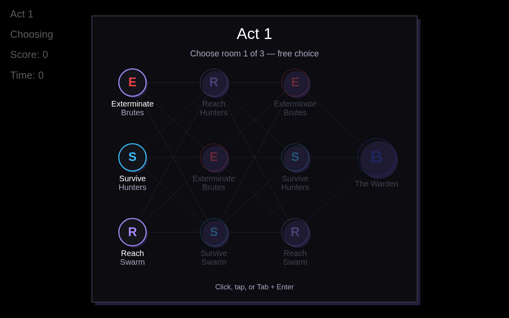
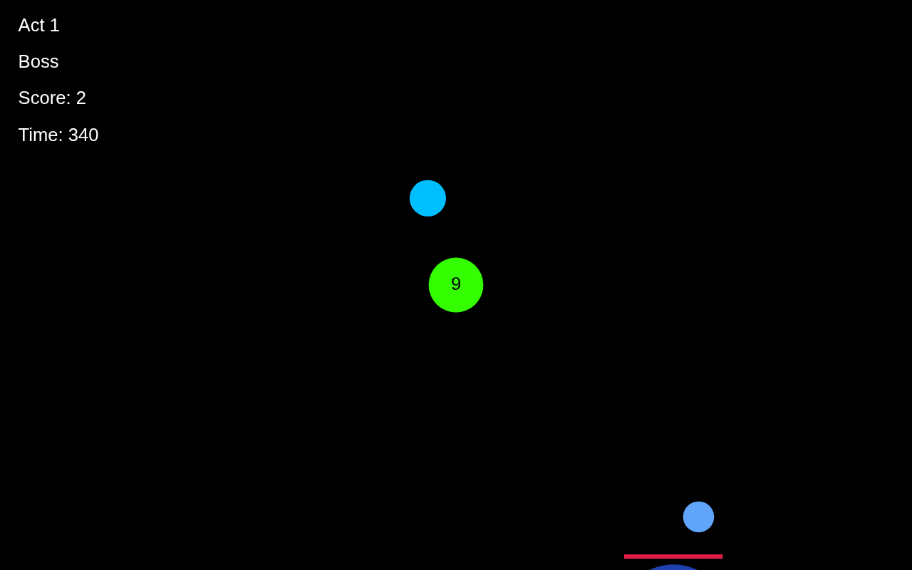
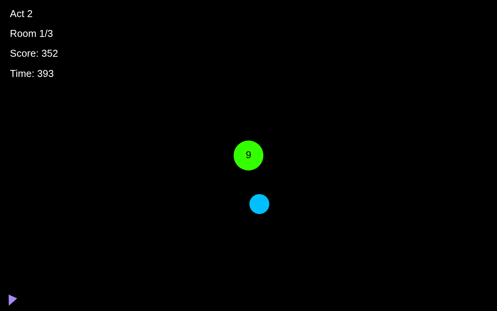
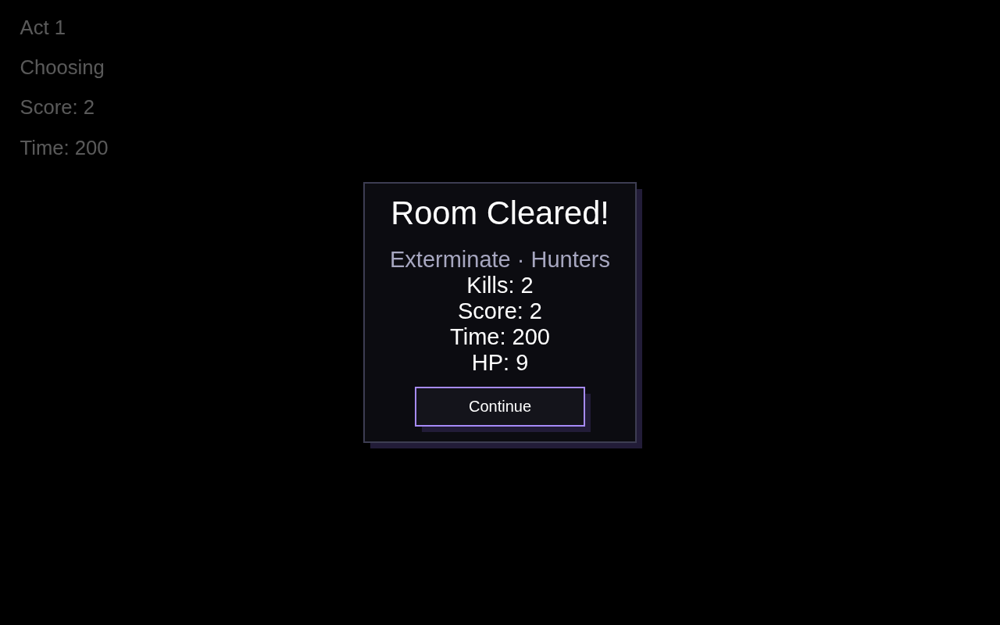
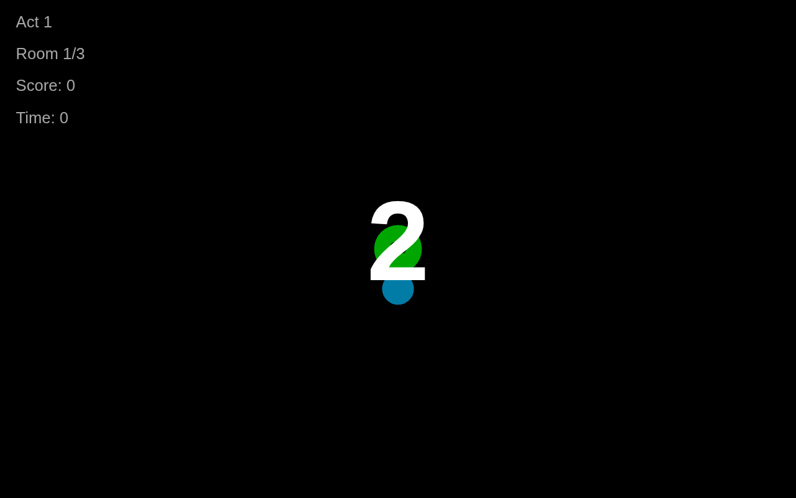

The endless survival run is now a dungeon. Each act is three free-choice rooms picked from a Slay-the-Spire-style map, then a boss. Three acts, then endless acts with scaling difficulty. Health, score, and time carry between rooms. The playable build is up top.
The week 3 build, frozen in time. Pick rooms on the map, clear them, face the boss. Same engine underneath.
New: the build is installable now. Add it to your home screen from the frozen build link below and it plays offline, standalone, with its own icon. Click the game once so it captures your keyboard. Pick a room on the map with click, tap, or Tab + Enter. On phones, drag to steer: the page locks scrolling and pinch-zoom while you play, so a hard steer never drags the screen.
Between rooms the game shows the act map, drawn on canvas with last week's Survivor UI kit. Each round offers three rooms, free choice, no path constraints for now. Clear a room, see your stats, pick the next. Faint path lines web the columns together so it reads as a dungeon map. A Start node marks where the run begins, and the route you take lights up in purple as you clear rooms. Clear all three and the boss node unlocks.
generateAct + MapMenuEvery round offers all three room types with shuffled enemy mixes, so each act guarantees variety. Nodes are canvas-drawn circles with focus support from the SurvivorFocusManager: Tab and Enter work, and mouse/touch hit-test the circles directly.
const generateAct = (actNum) => {
const rounds = []
for (let r = 0; r < 3; r++) {
const types = shuffled(Object.keys(ROOM_TYPES))
const mixes = shuffled(Object.keys(ENEMY_MIXES))
rounds.push(types.map((type, i) => ({ type, mix: mixes[i], picked: false })))
}
return { number: actNum, rounds, roundIndex: 0, bossType: drawBossType() }
}Dymensions, ported from Classic ScoundrelScoundrel lays out UI in a fixed virtual resolution and maps it to the screen with one uniform scale. I ported that system over, and the entire map panel is authored in a 1000x880 virtual space: title, nodes, labels, hint. Columns and rows can never drift or crowd when the aspect changes. The geometry is identical on a phone and an ultrawide. One deliberate deviation: labels keep a 12px legibility floor instead of shrinking to 7px on portrait phones.
// Scoped Dymensions: the same uniform-scale algorithm,
// applied to the map panel instead of the canvas.
this.mapDym = createDymensions(MAP_VW, MAP_VH) // 1000 x 880
this.mapDym.resize(availW, availH) // min-fit scale, centered
const sx = (vx) => px + d.toPositionX(vx) // virtual -> screen
const sy = (vy) => py + d.toPositionY(vy)Each act opens with a full-screen splash: the act number and which boss waits at the end. Each room opens with a 3-2-1-GO countdown while the whole world holds still, so the player gets a beat before the chaos. The clock does not run during the countdown, so survive rooms lose nothing to it.
// Act splash fires once per act, when its map opens.
if (this._splashAct !== actNumber) {
this._splashAct = actNumber
actSplashT = ACT_SPLASH_SECS // 1.8s, blocks map input while up
}
// Countdown freezes the world: enemies, spawners, and the clock.
const frozen = countdownT > 0
if (!frozen) { /* ...update world, spawn, tick clock... */ }Every hard cut got smoothed. Full-screen state swaps (start to map, map to room, stats back to map, game over to a fresh run) fade through black, swapping state at the black point. Overlay panels (pause, room-clear, game-over) fade in and rise a few pixels on an ease-out curve instead of popping.
// Fade-through-black: swap state at the black point, never stack.
const startTransition = (midFn) => {
if (transitionT > 0) { midFn(); return }
transitionMid = midFn
transitionT = TRANSIT_SECS // 0.3s
}
// Panel open: easeOutCubic fade + rise, about 0.23s.
applyOpenAnim() {
const e = 1 - Math.pow(1 - this.openAnimT, 3)
canvasContext.globalAlpha *= e
canvasContext.translate(0, (1 - e) * risePx)
}Rooms own their spawn plan and their clear condition. The old endless spawner is gone. Everything (health, shields, score, time) carries between rooms; each room just resets enemies.
ExterminateA finite roster spawns in small waves. The room clears when the queue is empty and the last enemy dies. Roster size scales with the act.
if (this.type === 'extermination')
return this.toSpawn <= 0 && enemies.length === 0SurviveThe classic: a timer, and the spawner trickles like the old endless mode. Last until the clock runs out. Whatever is left gets wiped on the way out.
if (this.type === 'survival')
return gameTime - this.roomStartTime >= this.durationReachA destination marker spawns at a world-fixed point far away. Because the controls are inverted (the world moves around you), the marker shifts with the world exactly like enemies do, so steering toward it just works. Off-screen, an edge arrow points the way.
// World-fixed point: shifts exactly like the enemies do.
update() {
shiftEnemiesFromKeyboard(this)
shiftEnemiesFromMouse(this)
shiftEnemiesFromGamepad(this)
}Everything else in the game dies in one shield hit. Bosses have HP that shield hits chip away, an HP bar overhead, and touching one hurts you (gated by invulnerability frames). Three bosses, drawn from a shuffle bag: you cycle through all three before any repeats.
HiveTyrantHuge, slow, and fertile. It births waves of chasers while you chip its HP. The fight is crowd control: manage the swarm, find windows on the boss.
if (this.spawnTimer % 220 === 0) spawnEnemyWave(EnemyBall, 4)DashReaperStalks slowly, stops, flashes white, then dashes at where you were standing. Dodge the dash, punish the recovery. A four-state machine: stalk, telegraph, dash, recover.
// Telegraph: stop and flash, then commit to the dash.
this.speedX = 0; this.speedY = 0
setSpeedTowardsTarget(this, player, CONFIG.enemy.speed * 6 * mul)WardenA slow core ringed by four guard orbs: regular enemies flying in orbit instead of chasing. Your shield kills guards like anything else, but the Warden reforges one every few seconds. Find angles through the ring.
// Shuffle-bag: all three bosses before any repeat.
const drawBossType = () => {
if (!bossBag.length) bossBag = shuffled(Object.keys(BOSS_INFO))
return bossBag.pop()
}The act map, a boss fight, a reach room, and the room-clear stats. All screenshots from the real build.




